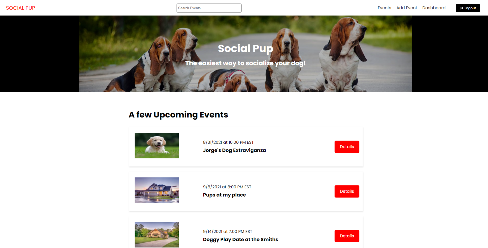
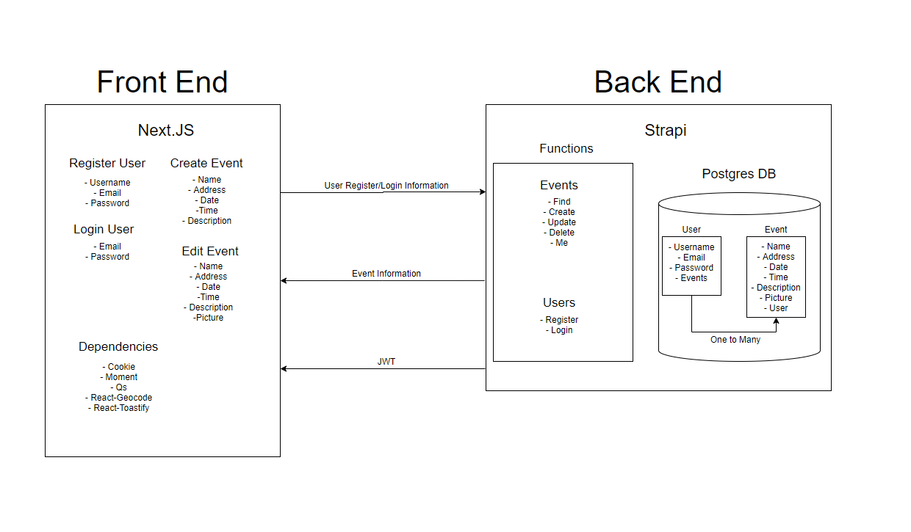
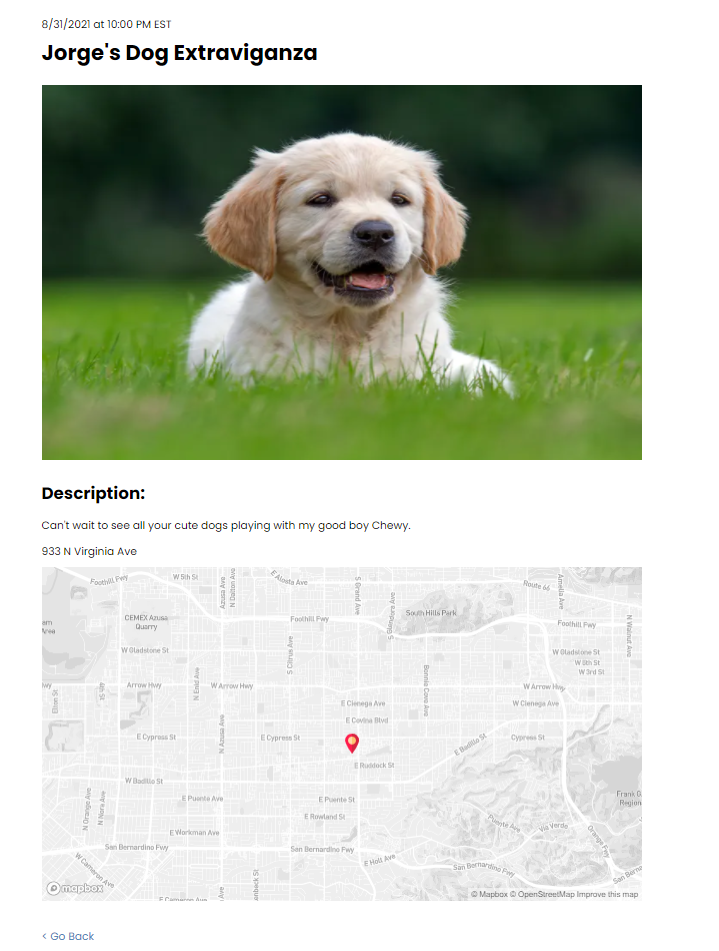

Web Application
A full stack web service that aims to make socializing your pet dog easy. Users can find or sign up and create events where dog owners can gather and let their pets socialize.
The frontend of the website is built using Next.JS. This made navigating pages a breeze since it removes the need to work with React Router. The main reason I used Next.JS was to easily create dynamic paths. The register/login authentication is done using JWT's which are provided by the Strapi backend. I really liked using the module system for css styles, holding all styles in a component or page specific module makes locating styles simple and keeps file sizes small. The maps in the event details pages were done by leveraging Google's geocoding API and Mapbox API.
The backend I made using Stapi. Strapi is a headless CMS that basically provides an easy way to manage routes and models for you. While I enjoyed using Strapi on this project, it was kind of weird not having to code out the models or simple routes myself. While Strapi manages a lot of the work for you, I still needed to write out the business logic of the API routes.